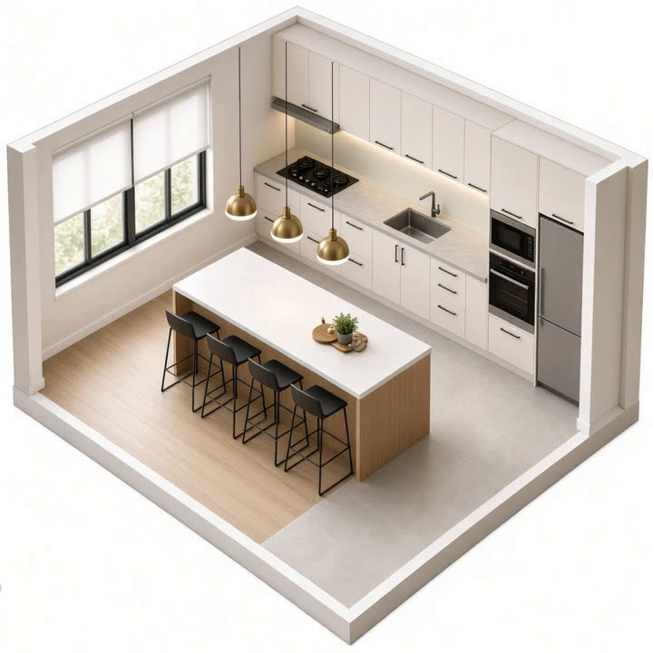
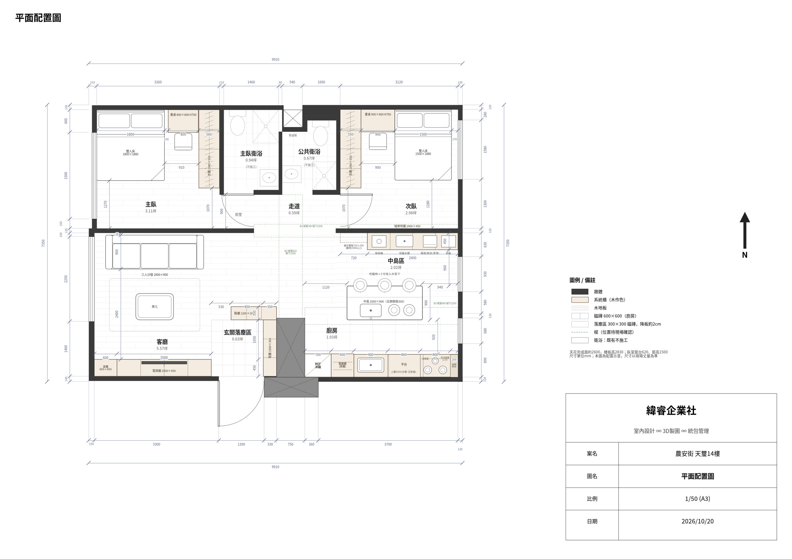
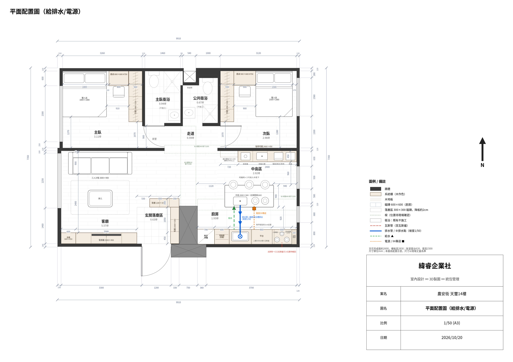
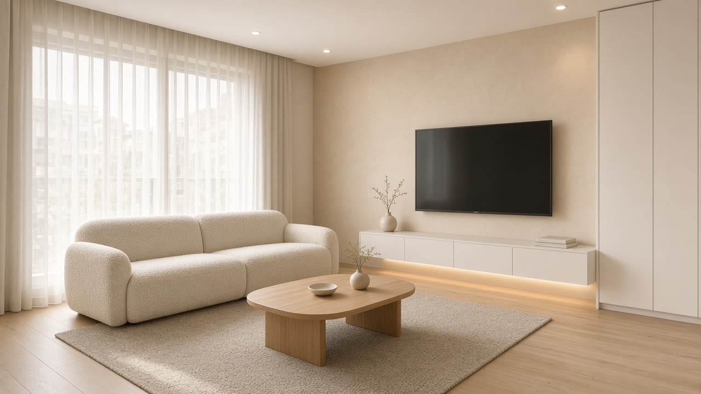
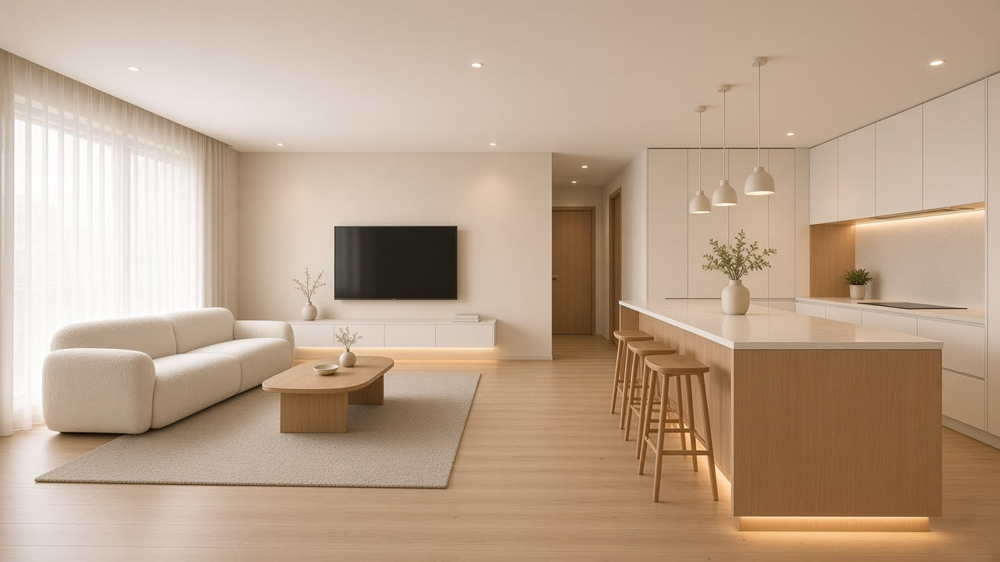
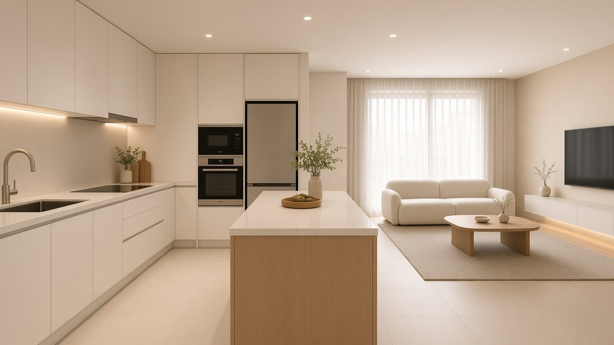
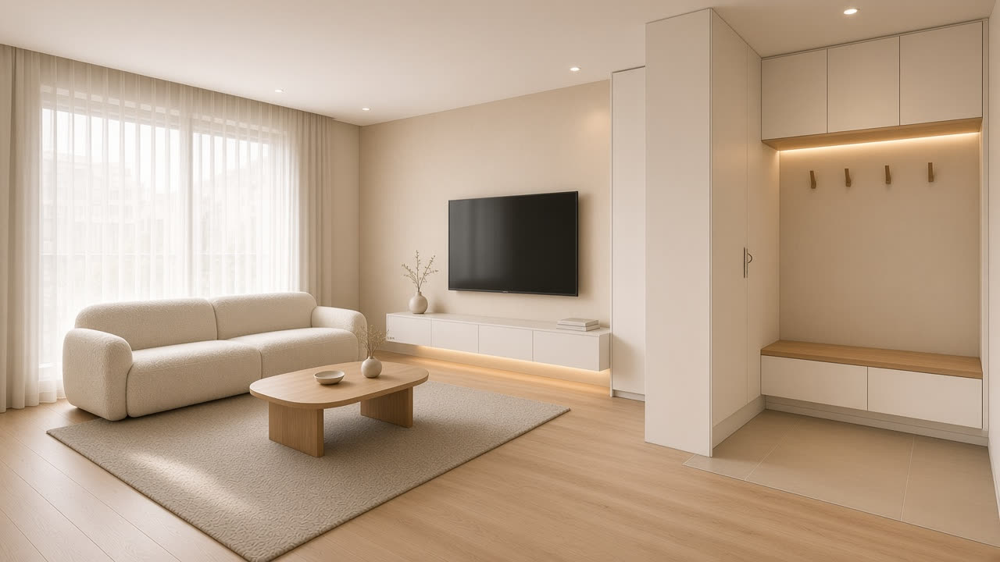
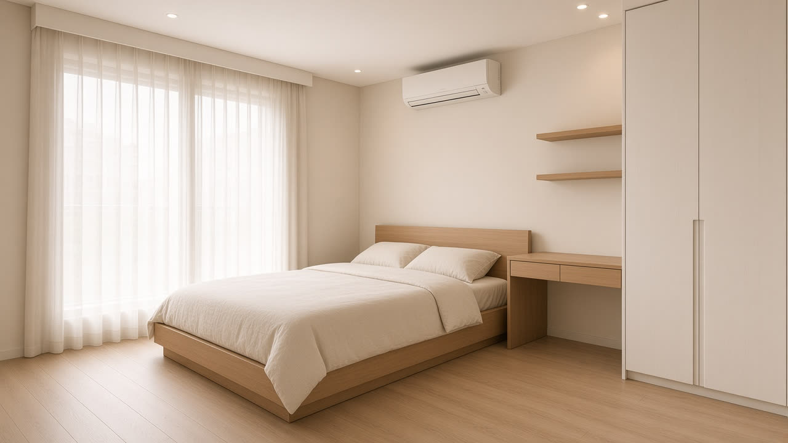
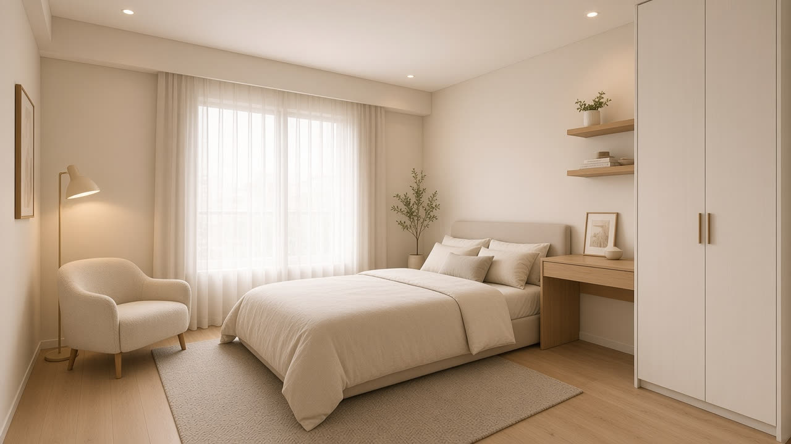

兩房、開放式廚房中島的城市住宅。以暖白、橡木與奶油色為基調，中島取代餐桌成為家的中心；兩間臥室皆配置到頂衣櫃與書桌，收納與生活動線一次到位。
樓板高 283 cm；中間兩間衛浴維持原狀不施作。

每個空間的等角剖面動畫，尺寸皆取自 D8 平面配置圖（單位 cm）。
一字型廚具沿牆配置，中島取代餐桌，兼作備餐台與早餐吧；對側咖啡吧櫃收納杯具與小家電。
廚具（西→東）：冰箱 70｜電器櫃 60｜水槽 90｜平台 86｜瓦斯爐 80。動畫為氛圍示意，椅數與比例以平面圖為準（實際為 3 張吧檯椅）。
電視牆位於客廳下側，沙發與其相對；懸浮電視櫃搭配到頂高櫃，入口落塵區留出寬敞開口。
床長邊貼窗、床頭靠實牆；床頭側整合書桌，對側為到頂系統衣櫃，經前室連通主臥衛浴。
書房兼臥室，書桌貼床頭配置，到頂衣櫃完整收納，適合孩童房或客房。
＊動畫與插畫為 AI 生成之氛圍示意，非施工圖；實際尺寸、材質與配置以本頁標註及平面圖為準。
D8 定案配置，點圖可放大。


3D 效果示意。





